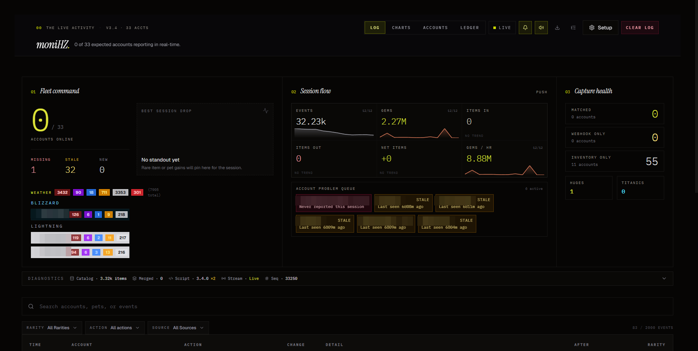
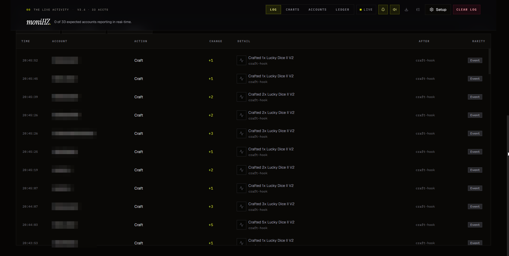
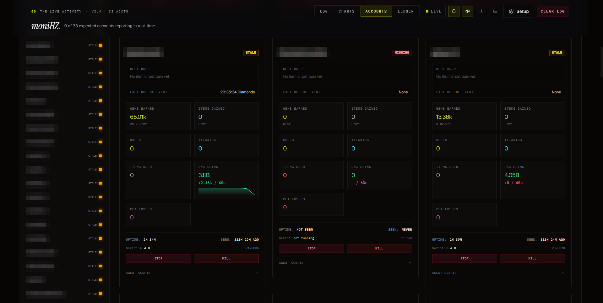

SSE over WebSockets
The dashboard streams live updates over Server-Sent Events — data flows one way (server → browser), so SSE is the simpler, sufficient choice. If the stream drops, a polling fallback takes over automatically every 3 seconds.
A local server and real-time dashboard ingesting events from a fleet of 30+ unattended game clients — so I know what every instance is doing without checking a single one by hand. Personal sandbox project: the fleet is game clients I run myself; the engineering — multi-source telemetry, deduplication, live streaming — is the part that transfers anywhere.
Thirty-three clients running unattended on one machine, each producing a stream of in-app events — and zero cross-client visibility. Rare, valuable events were easy to miss entirely. There was no way to tell a healthy quiet client from a dead one. And every configuration change meant touching each client individually.
What was needed: a single coordination point that ingests everything, reconciles it into one truthful event log, surfaces problems on its own, and pushes alerts when something rare or broken happens.
The dashboard streams live updates over Server-Sent Events — data flows one way (server → browser), so SSE is the simpler, sufficient choice. If the stream drops, a polling fallback takes over automatically every 3 seconds.
All state lives in one in-memory core, snapshotted to a JSON file on a 1.5-second debounce. The dashboard survives restarts with full history. For a single-user, single-machine tool, a database would be ceremony.
Every event arrives via two independent paths — an instant hook signal and a delayed inventory delta. Time-windowed merging reconciles them into one confirmed event instead of two inflated ones. Details below.
Clients poll a heartbeat endpoint and pick up config changes or stop commands on their own — no open ports on clients, no redeployment, no restarts.
Rare events post to Discord webhooks with embed thumbnails, rate-limited batching, and per-rarity filters — alerts arrive on the phone, not in a log nobody reads.
Item icons resolve from a public catalog API of 30,000+ entries, cached to disk (24h TTL) and memory (15min TTL), served through a local endpoint so the UI never waits on a third party.

The live view: fleet status, session metrics with sparklines, signal-source health, and a problem queue that names exactly which client is missing or stale and for how long. Client names redacted.

The reconciled event stream — every row carries its timestamp, client, action, delta, and which signal path produced it.

Every client as its own card — health badge (live / stale / missing), uptime, last-seen, per-client metrics, and stop/kill controls. The roster down the side scales to the full fleet. Client names redacted.
The same in-app action fires two independent signals: an event hook (instant, approximate amount) and an inventory snapshot poll (delayed, exact amount). Count both and every stat is inflated. Trust only the inventory and events appear late and the instant alerting is lost.
The fix is a three-tier windowing system: a 2.5-second duplicate-fingerprint window catches straight repeats; a 7-second intra-source window stacks rapid-fire signals from the same path; and a 20-second cross-source window merges the hook event with its matching inventory delta — keeping the larger amount and upgrading the merged event's confidence to "confirmed" when both paths agree. The result is an event log that is both instant and accurate, which neither source could deliver alone.
Honest state of the project: working and in daily use, not polished. Server endpoints don't have test coverage yet, the initial load has no skeleton states, and the profile-management UI is basic. Architecture, data flow, and debugging are mine; the keystrokes belong to AI coding agents I directed.